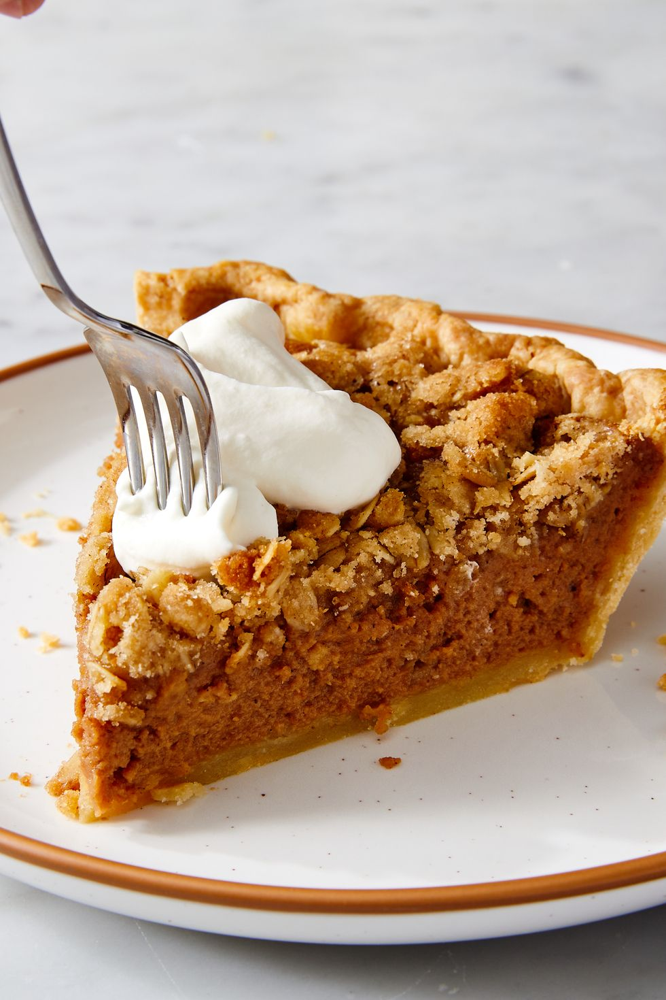

Apple Butter Pie

Description
Here is a delicious twist on a Thanksgiving favorite.
Instead of apple pie, this year try apple butter pie!
This pie, a cross between a pumpkin and a Dutch apple
pie, is adorned with an irresistible crunchy crumble.
(And we know that custard pies sometimes need a little
lift with some texture.) You can buy apple butter at
most grocery stores or make your own, especially for
apple pickers in the fall.
Ingredients
- 1/2 cup apple butter
- 1 egg, lightly beaten
- 1/2 cup sugar
- 1 tablespoon all-purpose flour
- 2 cups evaporated milk
- Ground cinnamon
- 1 unbaked pastry shell (9 inches)
Steps
- In a bowl, combine apple butter, egg, sugar, flour and milk; mix well.
- Pour into the pie shell; sprinkle with cinnamon.
- Bake at 425° for 10 minutes.
- Reduce temperature to 350°; bake 35 minutes more or until a knife inserted in the center comes out clean.
- Cool on a wire rack.
- Store in the refrigerator.